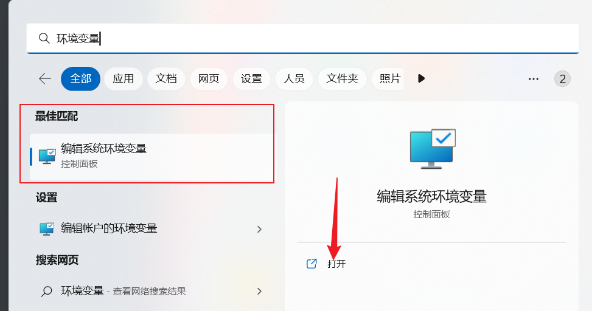
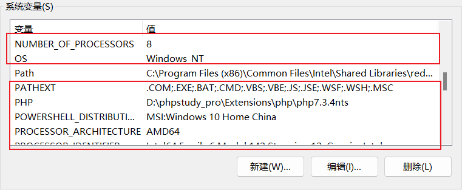

浅谈环境变量
环境变量是学习编程的过程中不可避免，也是很多人头大的问题
今天我就以python为例，告诉大家环境变量到底是什么，怎么配置
认识环境变量
先说结论：环境变量的本质，就是一个可以全局定位文件的快捷方式
这么说可能有些晦涩，我们举个例子
如下图，在D:\qq音乐\QQMusic\QQMusic1902.19.48.08\这个文件夹中，我有个[可执行文件]，叫做QQMusic.exe（QQMusic.exe是qq音乐的启动文件）
当我发送快捷方式到卓面，我就可以在桌面双击快捷方式运行它了
我相信这一点大家都没有问题，现在我将QQMusic.exe写入环境变量，我们来看看会发生什么
- 怎么写环境变量之后说明
写入环境变量后打开cmd，输入QQMusic.exe
QQMusic.exe分明不在C:\Users\MuJie这个目录下，但仍然被我打开了
这就是环境变量的本质，只要我配置了环境变量，那么在cmd中的任何位置，只要我输入可执行文件的名字，就可以直接打开对应的程序
所以：环境变量是一个全局快捷方式
配置环境变量
如果你看懂了上面对环境变量本质的说明，那么你就可以继续往下看了，如果没看懂，那么看完配置环境变量之后，请自己模仿上面的操作试一试
这很重要，否则只能算是知其然不知其所以然，下次遇到其他环境变量问题，照样抓瞎
这里以python为例，我们谈谈配置环境变量
首先说句题外话，编程语言相关环境最好集成在一个文件夹中，这是编程学习者应有的习惯，无关编程本身
比如我的编程环境，全部都在D:\Webenv目录下，并且按照系统、类型进行了详细的分类
这可以保障电脑中环境最基本的整洁
python我已经安装好，这里不提及安装的具体操作，有需要可以自行百度
我安装的位置是D:\Webenv\windows\python文件夹中
打开环境变量编辑器
在window搜索框直接输入【环境变量】，就可以打开控制面板中编辑环境变量选项，也可以自行去控制面板寻找


打开即可，win11和win10系统叫法不同，但操作一致
打开后会出现【系统属性】框
无需理会，直接点击右下的【环境变量】
用户变量和系统变量
进入后大部分系统都可以看到【用户变量】和【系统变量】两个操作框，极少数系统没有【用户变量】
- 用户变量：当前登录用户可以使用的环境变量
- 比如把上面QQ音乐的路径写到用户变量，那么只有
Mujie这个用户打开cmd才能直接运行QQMusic.exe，ZhangSan这个用户则不行 - 在编程中切换用户的操作虽然不多，但也不是没有，所以一般不使用用户变量
- 比如把上面QQ音乐的路径写到用户变量，那么只有
- 系统变量：所有登录这个系统的用户都可以使用的环境变量
- 把QQ音乐写入系统变量，那么不管是用户
Mujie还是用户ZhangSan，只要在cmd输入QQMusic.exe，就可以直接打开QQ音乐 - 前提是同一个系统，如果电脑上有系统A和系统B，在系统A上配置的系统变量，只有系统A的用户可以访问，系统B不能访问
- 把QQ音乐写入系统变量，那么不管是用户
【用户变量】和【系统变量】配置完全相同
Path
别看环境变量框多，但不管系统变量或者用户变量，我们都只需要关注Path变量，这里以系统变量为例
Path变量才是真正的环境变量，其他变量都是对Path变量的补充（这一点后面再说）
双击打开Path变量，会进入如图所示框
我的电脑已经用了很久，所有已经进行了大量的配置，不用在意这些配置具体的含义
Python中需要关注的只有两个文件夹
- 存在python可执行文件
python.exe的Python目录本身 - 存放各种python工具，比如著名的第三方库下载工具
pip的Scripts目录
很多python初学者下载第三方库报错，问题就出在Scrpits目录
一般来说，安装python时会自动配置环境变量，但是一旦电脑上有多个版本的环境，就极有可能发生环境冲突
所以双击
exe文件安装并自动配置环境变量的行为请让他停留在新手期，不然总有一天你会为此付出代价
言归正传，我的python.exe执行文件和Scripts目录的位置分别是：
D:\Webenv\windows\python\python3.10.4
D:\Webenv\windows\python\python3.10.4\Scripts
接下来将这两条路径写入Path变量
点击新建，将路径复制进去即可，顺序无所谓
注意：
复制的是可执行文件所在的目录，而不是可执行文件本身
如
python.exe，我写入Path的是D:\Webenv\windows\python\python3.10.4这个目录，而不是
D:\Webenv\windows\python\python3.10.4\python.exe这一点非常重要
而
Scripts本身就是包含了多个可执行文件的目录，所以直接写即可
验证
现在python环境就配置好了，打开cmd，我们输入python可执行文件的名字验证一下
注意
1、cmd与环境变量并不会同步更新
- 如果在配置环境变量之前已经打开了cmd，环境变量配置完成后，cmd仍然会找不到对应可执行文件
- 正确的做法是重新打开cmd，再进行验证
2、windows会自动省略.exe后缀
- 输入
python.exe和省略.exe直接输入python效果是一样的
只要看懂了上述部分，环境变量的配置以及基本的查错就没问题了，如果想再深入一下，请看下述解释
环境变量高级
自定义变量的作用
大家在配置环境变量时不难发现，除Path变量外，其实还有相当多的变量

这些变量没有一个标准的名字，这里不妨称之为【自定义变量】
他们是对Path条目的【抽象】
举个例子，我要用python打印abc123,abc456,abc我的祖国
这三个字符串都有abc，所以可以把abc提取出来简化代码，写成：
pre = "abc"
print(pre + "123")
print(pre + "456")
print(pre + "我的祖国")
保存abc的变量pre，就相当于环境变量中的自定义变量，而print输出的字符串，就是Path变量中具体的路径条目
还是以python为例，我们现在需要写以下两个目录
D:\Webenv\windows\python\python3.10.4
D:\Webenv\windows\python\python3.10.4\Scripts
他们的共同点是都有D:\Webenv\windows\python\python3.10.4
这时就可以定义一个变量，变量名为python3.10，值为这条共同路径
然后在Path中，我们使用这个自定义的变量python3.10
编辑环境变量的语法是%自定义变量名%
拼接后续路径，就变成了%python3.10% 和 %python3.10%\Scripts
python同样正常运行
这样做的意义在于节约Path变量长度
Path变量只能存储2047个字符，超过就会报错，所以需要我们合理使用自定义变量规划环境变量
同时运行多版本语言环境
编程的过程中，往往需要使用多个版本的语言环境，比如python3和python2
但他们的可执行文件名都是python.exe，这就意味着直接配置肯定出错
这里就需要我们手动修改某个版本的可执行文件名，比如将python2的可执行文件改为python2.exe
然后将文件路径写入环境变量
这里由于Scripts下的可执行文件实在太多，一个个改太过麻烦，平时也不用python2工具，我在路径中加了--pass当作注释
需要使用时只需去掉--pass，同时注释掉python3的Scripts路径，即可正常使用
此时在cmd中输入修改后的可执行文件名python2，就可以运行python2的环境了
python3和python2得以在环境变量中共存